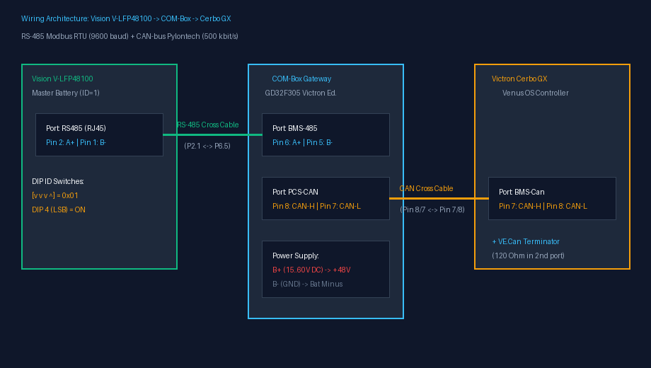
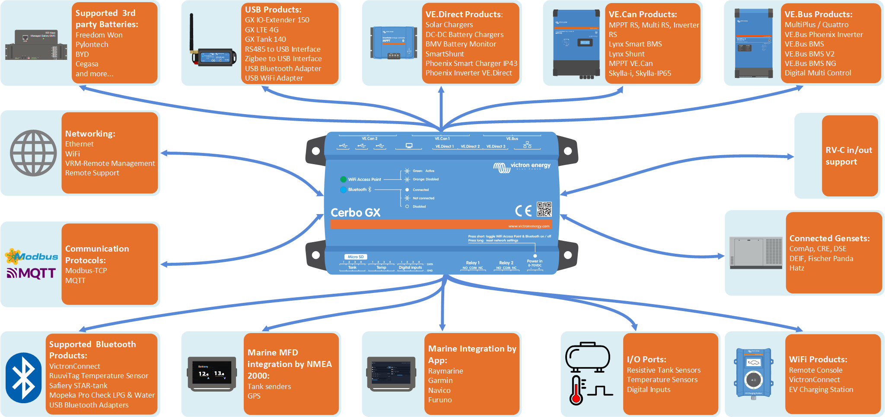
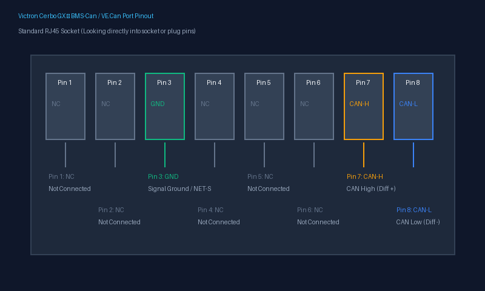
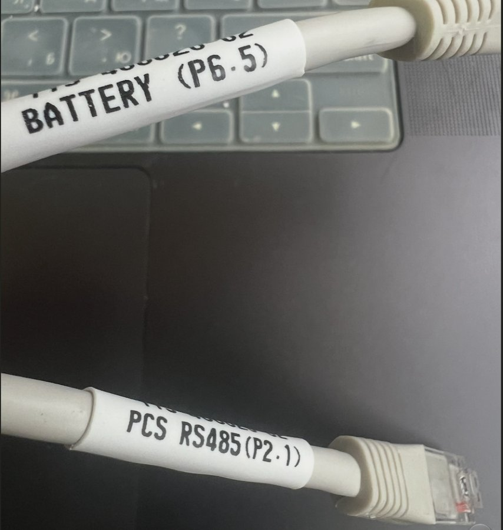
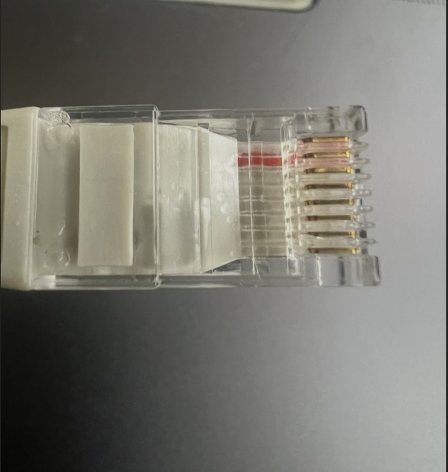
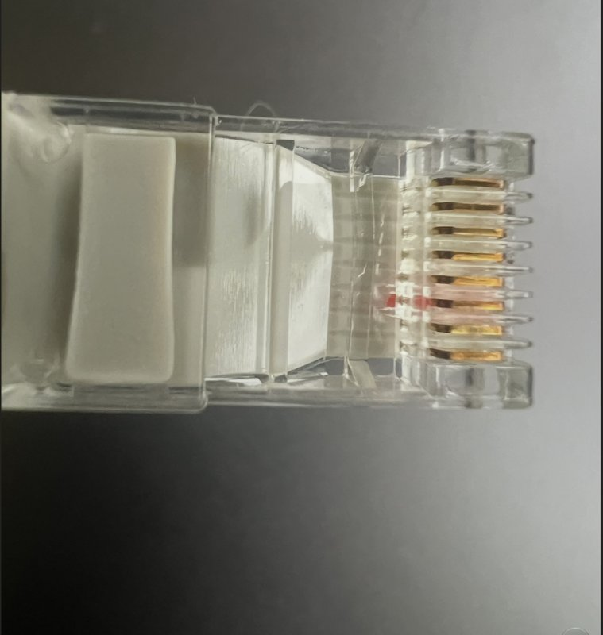
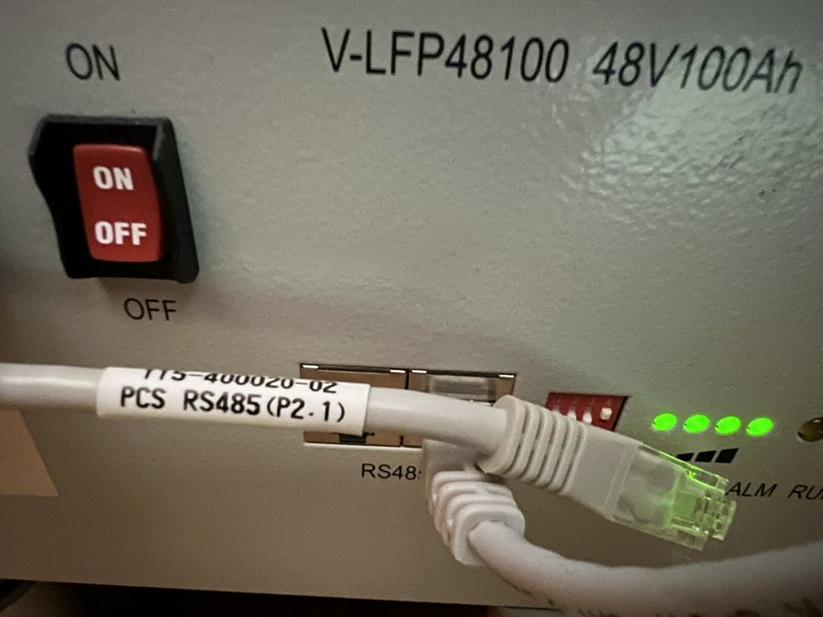

| Роз'єм PCS-CAN на коробці COM-Box | Штекер кабелю (P8.7) |
|---|---|
 |
 |
Порт PCS-CAN (Pin 8=CAN-H, Pin 7=CAN-L) |
Розшито піни 8 та 7 з боку коробки |
[!WARNING]
ВІДМОВА ВІД ВІДПОВІДАЛЬНОСТІ / DISCLAIMER
Цей проект є некомерційною інженерною ентузіастською розробкою (DIY / Open Source).
Проект не є офіційним продуктом і не має відношення до компаній Victron Energy, Vision Group або Felicity Solar. Це інженерна спроба інтегрувати батареї Vision V-LFP48100 у середовище Victron Energy.
Використання даної схеми, прошивки та інструкцій здійснюється виключно на власний розсуд та під особисту відповідальність користувача. Розробники не несуть відповідальності за пошкодження обладнання, вихід з ладу елементів живлення, інверторів чи будь-які інші збитки. Дотримуйтесь правил техніки безпеки при роботі з постійним струмом та акумуляторами високої ємності.
COM-Box Victron Edition — це спеціалізований мікроконтролерний шлюз на базі процесора GD32F305, розроблений для повної безшовної інтеграції промислових літій-залізо-фосфатних акумуляторів Vision V-LFP48100 (15S 48V 100Ah) в енергетичні системи Victron Energy.
Пристрій виконує дві ключові ролі: 1. Збір телеметрії (RS-485 Modbus RTU): Безперервно опитує від 1 до 16 акумуляторних блоків Vision, збираючи точні напруги кожної комірки (15S), струми, температури, лічильники ємності, аварійні статуси та стан вбудованих балансирів. 2. Керування системою Victron (CAN Bus @ 500 кбіт/с): Транслює агреговані параметри банку в системний контролер Victron Cerbo GX через стандартний протокол Pylontech CAN v2.0.6. Контролер Cerbo GX автоматично керує інвертором MultiPlus-II / Quattro через механізм DVCC (Distributed Voltage and Current Control).
BMS-485 (RJ45): Підключення до шини зв'язку акумуляторів Vision (порт RS485 на провідному блоці АКБ).PCS-CAN (RJ45): Підключення до порту BMS-Can контролера Victron Cerbo GX.PCS-485 (RJ45): Діагностичний порт зв'язку з ПК (моніторинг bms_web.py).SW (Блок із 5 DIP-перемикачів): Апаратне налаштування профілів заряду, режимів сканування та балансування.B+ та B-: Підключення безпосередньо до шини акумуляторного банку (робочий діапазон від 15 В до 60 В DC).B+ — підключається до клеми +48 В акумулятора.B- — підключається до клеми GND / - акумулятора.На верхній кришці розташовані 4 світлодіоди з шовкографією Felicity:
┌────────────────────────────────────────────────────────┐
│ ВЕРХНЯ КРИШКА │
│ │
│ ( 1 ) ( 2 ) ( 3 ) ( 4 ) │
│ PCS-485 PCS-CAN BMS-485 Running │
│ Connect Connect Connect │
└────────────────────────────────────────────────────────┘
| Індикатор на кришці | Пін MCU | Поведінка | Опис та стан системи |
|---|---|---|---|
| 1. PCS-485 Connect | PC4 |
Спалахує під час обміну | Активність на порту PCS-485 (підключено ПК або веб-діагностику bms_web.py). |
| 2. PCS-CAN Connect | PC5 |
Спалахи з частотою 1 Гц | Активна трансляція CAN-телеметрії у Cerbo GX (пакети 0x351, 0x355, 0x356 тощо). |
| 3. BMS-485 Connect | PB1 |
Короткі ритмічні спалахи | Активний обмін з акумуляторами Vision по RS-485 (кожен спалах — запит/відповідь блоку). |
| 4. Running | PB0 |
Світиться постійно | Ядро GD32 запущене, операційна система та алгоритми працюють стабільно. |
(Додатково на платі: LED1 (PC13) блимає з частотою 1 Гц, коли активна сесія вирівнювання/балансування; LED2 світиться постійно — живлення 3.3 В).

⚠️ КРИТИЧНЕ ПОПЕРЕДЖЕННЯ З БЕЗПЕКИ:
НІКОЛИ НЕ ВИКОРИСТОВУЙТЕ ЗВИЧАЙНИЙ ПРЯМИЙ ПАТЧ-КОРД ДЛЯ З'ЄДНАННЯ З CERBO GX!
У гнізді COM-BoxPCS-CANлінія CAN-H розведена на Pin 8, а у Victron Cerbo GX на Pin 8 знаходиться лінія CAN-L. Якщо вставити прямий кабель, диференційні лінії CAN-H та CAN-L замкнуться між собою, зв'язок не запуститься, а трансивер може вийти з ладу!
| Огляд комунікаційних портів Cerbo GX | Схема розпіновки порту BMS-Can / VE.Can |
|---|---|
 |
 |
Для підключення виготовляється або обтискається трижильний крос-кабель крученої пари (UTP Cat5e/Cat6) згідно з офіційним стандартом Victron CAN-bus BMS Cable Guide:
Сторона COM-Box (Порт PCS-CAN) Сторона Victron Cerbo GX (Порт BMS-Can)
┌──────────────────────────────┐ ┌──────────────────────────────────────┐
│ Pin 8 (CAN-H) ───────────────┼────────┼──► Pin 7 (CAN-H) │
│ Pin 7 (CAN-L) ───────────────┼────────┼──► Pin 8 (CAN-L) │
│ Pin 1 (GND) ───────────────┼────────┼──► Pin 3 (GND / NET-C) │
│ │ │ │
│ Піни 2, 3, 4, 5, 6 НЕ ПІДКЛ. │ │ Піни 1, 2, 4, 5, 6 НЕ ПІДКЛЮЧАТИ! │
└──────────────────────────────┘ └──────────────────────────────────────┘
| Роз'єм PCS-CAN на коробці COM-Box | Штекер кабелю (P8.7) |
|---|---|
|
|
Порт PCS-CAN (Pin 8=CAN-H, Pin 7=CAN-L) |
Розшито піни 8 та 7 з боку коробки |
Обов'язковий термінатор 120 Ом:
Шина CAN вимагає узгодження на обох кінцях лінії.
У сусіднє вільне гніздо порту BMS-Can на Cerbo GX обов'язково вставте синій фірмовий термінатор 120 Ом (VE.Can Terminator), що входить у комплект Cerbo GX.
⚠️ УВАГА: Прямий патч-корд НЕ ПІДХОДИТЬ!
Згідно з офіційною специфікацією Felicity Solar COM-BOX, лінії опитування акумулятора виведені на Pin 5 (BMS-485B) та Pin 6 (BMS-485A), тоді як у батареях Vision V-LFP48100 лінії даних знаходяться на Pin 1 (RS485-B) та Pin 2 (RS485-A).
Для з'єднання використовується адаптерний 3-жильний кабель:
Сторона COM-Box (Порт BMS-485) Сторона Vision BMS (Порт RS485)
┌──────────────────────────────┐ ┌──────────────────────────────────────┐
│ Pin 6 (BMS-485A / Data +) ───┼────────┼──► Pin 2 (RS485-A / Data +) │
│ Pin 5 (BMS-485B / Data -) ───┼────────┼──► Pin 1 (RS485-B / Data -) │
│ Pin 1 (GND / Заземлення) ────┼────────┼──► Pin 3 або Pin 6 (GND) │
│ │ │ │
│ Піни 2, 3, 4, 7, 8 НЕ ПІДКЛ. │ │ Піни 4, 5, 7, 8 НЕ ПІДКЛЮЧАТИ! │
└──────────────────────────────┘ └──────────────────────────────────────┘
| Маркування кабелю RS485 | Штекер COM-Box (P6.5) |
Штекер батареї Vision (P2.1) |
|---|---|---|
 |
 |
 |
Бірка P6.5 ↔ P2.1 |
Розшито піни 6 та 5 | Розшито піни 2 та 1 |
Підключення до порту COM-Box BMS-485 |
Підключення до порту батареї Vision RS485 |
|---|---|
 |
 |
➡️ Порт BMS-485 на коробці |
➡️ Порт RS485 на головній АКБ |
Кожен акумуляторний блок у паралельному ланцюзі повинен мати власну унікальну адресу Modbus.
На лицьовій панелі акумулятора розташований червоний перемикач на 4 позиції з написом ID.
⚠️ КРИТИЧНО ВАЖЛИВО: НАПРЯМОК ВІДЛІКУ БІТІВ (СПРАВА НАЛІВО)!
Цифри1 2 3 4на корпусі перемикача нанесені зліва направо, але вага розрядів адреси рахується СПРАВА НАЛІВО: * DIP 4 (крайній справа): Вага 1 (LSB). Важіль ВГОРУ (ON) = +1. * DIP 3 (другий справа): Вага 2. Важіль ВГОРУ (ON) = +2. * DIP 2 (другий зліва): Вага 4. Важіль ВГОРУ (ON) = +4. * DIP 1 (крайній зліва): Вага 8 (MSB). Важіль ВГОРУ (ON) = +8.
| Номер блоку | Адреса Modbus | Положення важелів [DIP 1..4] | DIP 1 (вага 8) | DIP 2 (вага 4) | DIP 3 (вага 2) | DIP 4 (вага 1) | Призначення |
|---|---|---|---|---|---|---|---|
| АКБ №1 | 0x01 |
[ Вниз, Вниз, Вниз, ВГОРУ ] |
OFF | OFF | OFF | ON | Головний блок (сюди вмикається кабель від COM-Box) |
| АКБ №2 | 0x02 |
[ Вниз, Вниз, ВГОРУ, Вниз ] |
OFF | OFF | ON | OFF | Підлеглий блок (Slave 1) |
| АКБ №3 | 0x03 |
[ Вниз, Вниз, ВГОРУ, ВГОРУ ] |
OFF | OFF | ON | ON | Підлеглий блок (Slave 2) |
| АКБ №4 | 0x04 |
[ Вниз, ВГОРУ, Вниз, Вниз ] |
OFF | ON | OFF | OFF | Підлеглий блок (Slave 3) |
| АКБ №5 | 0x05 |
[ Вниз, ВГОРУ, Вниз, ВГОРУ ] |
OFF | ON | OFF | ON | Підлеглий блок (Slave 4) |
| ... | ... | ... | ... | ... | ... | ... | До 16 блоків включно |
BMS-485 від COM-Box вставляється в будь-яке з двох паралельних гнізд з написом RS485 головного блоку (АКБ №1, адреса 0x01).RS485 блоку №1 у роз'єм RS485 блоку №2, далі від блоку №2 до блоку №3 за ланцюжковою топологією (Daisy Chain).Підключіться до вебінтерфейсу Cerbo GX (або через сенсорний екран GX Touch / Remote Console на VRM Portal):
Settings ➔ Services ➔ VE.Can port (або BMS-Can port).CAN-bus profile оберіть:
CAN-bus BMS (500 kbit/s)Pylontech batteryСистема DVCC автоматично транслює динамічні ліміти заряду з COM-Box на інвертор MultiPlus-II:
1. Відкрийте меню: Settings ➔ DVCC.
2. Встановіть наступні параметри:
* DVCC: ON (Увімкнено);
* Controlling BMS: Оберіть вашу виявлену батарею (Pylontech battery);
* Limit managed battery charge voltage: ON (Увімкнено) ➔ Встановіть значення: 52.4 V або 52.5 V (це рекомендація Victron для 15S, щоб запобігти помилкам High Voltage);
* Shared Voltage Sense (SVS): OFF (Суворо вимкнено! Точну напругу банку транслює COM-Box);
* Shared Temperature Sense (STS): OFF (Суворо вимкнено! Температуру повідомляє BMS).
Через програму VictronConnect (або VEConfigure 3 через перехідник MK3-USB):
52.0 В (або 52.4 В за наявності DVCC)51.0 В1 година44.0 В (рекомендація Victron для 15S)48.0 В48.0 В46.0 В (для всіх струмів розряду за інструкцією Victron Pylontech)48.0 ВCCL = 0 А та знімає біт дозволу заряду в CAN-пакеті 0x35C.| DIP | Назва | Стан OFF (Вниз, стандарт) | Стан ON (Вгору) |
|---|---|---|---|
| SW1 | Резерв | Зарезервовано | Зарезервовано |
| SW2 | Режим порту PCS-485 | Дзеркало телеметрії BMS (для моніторингу через ПК) | Наскрізний міст |
| SW3 | Швидкість опитування RS-485 | Розумний Plug & Play автопошук (опитування лише активних АКБ, цикл 400–800 мс) | Примусове повне сканування (всі 16 адрес, сервісний режим, 6.4 с) |
| SW4 | Струм заряду на модуль | 50 А на блок (номінал виробника Vision, 0.5C) | 15 А на блок (тихий ощадливий заряд 0.15C) |
| SW5 | Резерв | Зарезервовано | Зарезервовано |
0x356) заряд позначається зі знаком + (позитивний струм), а розряд у навантаження — зі знаком - (негативний струм).-).+).BMS_CURRENT_CHARGE_IS_POSITIVE у src/main.cpp (усередині прошивки COMBOX розряд має знак > 0, заряд < 0, а при передачі кадру 0x356 виконується інверсія у формат Victron; на тайм-ауті BMS кількість модулів bms_pack_count безпечно фіксується як мінімум на 1).CAN-bus BMS (500 kbit/s).0x01.Проект відкритий для модифікації та побудований з використанням екосистеми PlatformIO у VS Code:
* Середовище: VS Code + розширення PlatformIO або утиліта командного рядка pio.
* Основний вихідний код: src/main.cpp. Всі ключові параметри (напруги, порогові значення струму, таймінги Modbus, структура CAN-пакетів) чітко структуровані у вигляді #define констант на початку файлу.
* Збірка: Виконується командою pio run. Результат автоматично генерується у .pio/build/genericGD32F305/firmware.bin та копіюється в папку compiled_firmware/.
* Прошивка: Через інтерфейс SWD (ST-Link V2) за допомогою команди pio run -t upload або утиліти STM32CubeProgrammer / OpenOCD (початкова адреса 0x08000000).